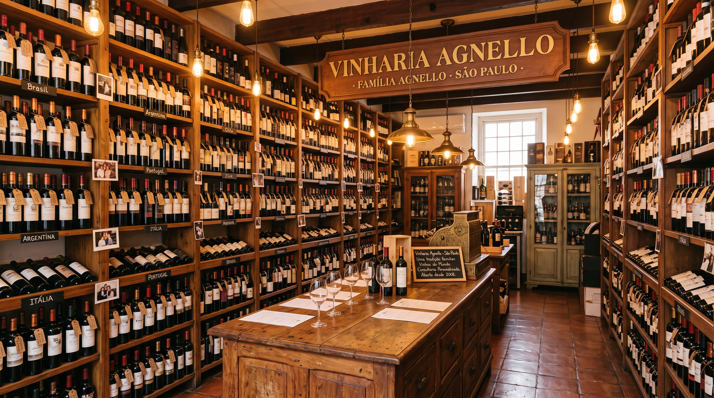

Quem somos

Há mais de 15 anos, a Vinheria Agnello atua em São Paulo oferecendo uma ampla seleção de rótulos nacionais e internacionais. O que começou como uma loja física dedicada ao bom atendimento se tornou, com o tempo, referência para quem busca não só comprar vinho, mas entender de vinho. Hoje somos um negócio familiar, conduzido pelo proprietário Giulio Agnello e sua filha Bianca, à frente de uma equipe de 6 pessoas dedicadas a administração, estoque e atendimento.
Por que escolher a Vinharia Agnello
- Atendimento consultivo dos vendedores especializados.
- Conhecimento profundo sobre uva, região e harmonização.
- Armazenagem controlada, com cuidado especial pra vinhos raros e de maior valor
Expansão Digital
Com uma gestão tradicional, Giulio sempre priorizou o contato direto e o atendimento próximo com cada cliente. Por muito tempo, resistiu à ideia de vender vinhos pela internet, por acreditar que esse meio era "frio" demais e distante da experiência que buscava oferecer em sua loja.
Foi por incentivo de Bianca que a Vinharia Agnello decidiu expandir sua atuação para o mundo digital. Nosso objetivo com este site é justamente reproduzir, no ambiente online, a mesma experiência de consultoria e cuidado que você encontra em nossa loja física. Para conhecer ainda mais sobre o universo dos vinhos, visite a wine.com.br, uma das maiores referências do setor no Brasil.